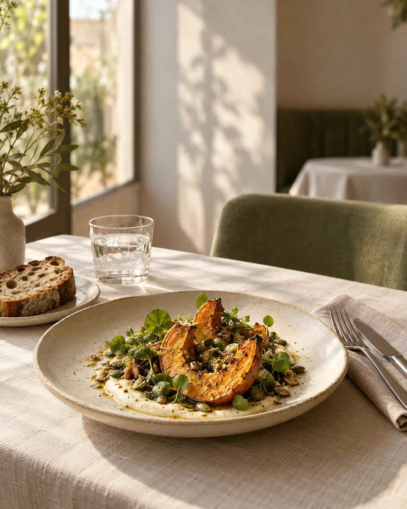

RÉSERVER UN MOMENT À PART
Il y a une place
pour vous.
Choisissez votre jour et votre service. Le calendrier vérifie les places avant de confirmer.
CUISINE DE SAISON · BISTRO CONTEMPORAIN
La saison.
La table.
Le moment.
Une cuisine qui suit les saisons. Une maison qui vous ressemble. Et ce plaisir simple : se retrouver à table.
Une maison à taille humaine.
Imaginée pour cette démonstration.

L’ESPRIT DE LA MAISON
Bien manger.
Se sentir bien.
Des produits choisis pour leur goût, une carte qui évolue avec le marché et des recettes qui laissent parler les ingrédients. Le végétal se fait généreux, les assiettes restent lisibles.
On vient pour déjeuner tranquillement, découvrir un plat de saison ou prolonger un dîner. Ici, la cuisine et le lieu racontent la même chose : le soin des détails, sans cérémonie.
Préparer votre visite ↗Le bon équilibre,
sans détour.
Des plats décrits avec leurs ingrédients et leurs allergènes.
Des choix végétariens repérables en un geste.
Composez une sélection et retrouvez son montant, sans commande.
LES MOMENTS QUI COMPTENT
À deux.
Ou ensemble.
Un déjeuner tranquille, un anniversaire ou un dîner entre amis. La réservation vous permet de choisir le jour, le service et le nombre de convives.
Le calendrier est fictif. Le serveur vérifie les places et enregistre les essais pendant 24 h ; aucune table réelle n’est réservée.
Explorer les créneaux ↗AVANT DE POUSSER LA PORTE
On se retrouve ?
Déjeuner & dîner.
- Mardi — samedi
- 12 h — 14 h · 19 h — 22 h
- Dimanche & lundi
- Fermé dans cet exemple
Le calendrier de démonstration couvre les 30 prochains jours.
Un coin de quartier.
Bordeaux · quartier imaginaire.
Il n’existe pas d’adresse de restaurant associée à cette démonstration.
La réservation est-elle réelle ?
Non. Le parcours valide la saisie et affiche une confirmation de démonstration. Aucun message n’est envoyé, aucun restaurateur n’est contacté.
Peut-on commander avec la sélection ?
La sélection permet de tester les quantités et le calcul du montant. Elle ne déclenche ni commande ni paiement.
Vous souhaitez ce type de site ?
Numéryl peut définir avec vous les fonctionnalités, les contenus et les services nécessaires. Décrire votre projet.